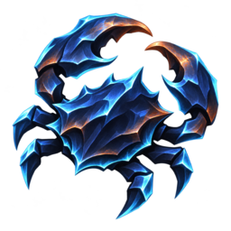

STYLE LAB / NOVEMBER 2026
Moins de bruit.
Plus de jeu.
Dix directions pour le même price checker.
Teste les filtres, les sliders et les offres.
Choisis deux styles pour les comparer.

AWAKENED CRAB TRADE INTERFACE STUDIES / 01—10Guide & sourcesSTYLE LAB / NOVEMBER 2026
Dix directions pour le même price checker.
Teste les filtres, les sliders et les offres.
Choisis deux styles pour les comparer.